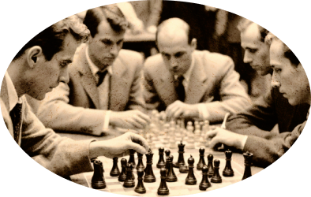

ПРЕВРАТИТЕ
УЕЗДНЫЙ ГОРОД
В СТОЛИЦУ
ЗЕМНОГО ШАРА
Оплатите взнос на телеграмм для организации
Международного васюкинского турнира по шахматам
ДЕЛО ПОМОЩИ УТОПАЮЩИМ - ДЕЛО РУК САМИХ УТОПАЮЩИХ! • ШАХМАТЫ ДВИГАЮТ ВПЕРЕД НЕ ТОЛЬКО КУЛЬТУРУ, НО И ЭКОНОМИКУ! • ЛЕД ТРОНУЛСЯ, ГОСПОДА ПРИСЯЖНЫЕ ЗАСЕДАТЕЛИ! •
ДЕЛО ПОМОЩИ УТОПАЮЩИМ - ДЕЛО РУК САМИХ УТОПАЮЩИХ! • ШАХМАТЫ ДВИГАЮТ ВПЕРЕД НЕ ТОЛЬКО КУЛЬТУРУ, НО И ЭКОНОМИКУ! • ЛЕД ТРОНУЛСЯ, ГОСПОДА ПРИСЯЖНЫЕ ЗАСЕДАТЕЛИ! •
ЧТОБЫ ПОДДЕРЖАТЬ
МЕЖДУНАРОДНЫЙ ВАСЮКИНСКИЙ
ТУРНИР  ПОСЕТИТЕ ЛЕКЦИЮ НА ТЕМУ:
«ПЛОДОТВОРНАЯ ДЕБЮТНАЯ ИДЕЯ»
И СЕАНС ОДНОВРЕМЕННОЙ ИГРЫ
В ШАХМАТЫ НА 160 ДОСКАХ
ГРОССМЕЙСТЕРА О. БЕНДЕРА
| Место проведения: | Клуб «Картонажник» |
| Дата и время мероприятия: | 22 июня 1927 г. в 18:00 |
| Стоимость входных билетов: | 20 коп. |
| Плата за игру: | 50 коп. |
| Взнос на телеграммы: | 100 руб. 21 руб. 16 коп. |
По всем вопросам обращаться в администрацию к К. Михельсону
ЭТАПЫ ПРЕОБРАЖЕНИЯ
ВАСЮКОВ
Будущие источники
обогащения васюкинцев
1Строительство железнодорожной магистрали Москва–Васюки
2Открытие фешенебельной гостиницы «Проходная пешка» и других небоскрёбов
3Поднятие сельского хозяйства в радиусе на тысячу километров: производство овощей, фруктов, икры, шоколадных конфет
4Строительство дворца для турнира
5Размещение гаражей для гостевого автотранспорта
6Постройка сверхмощной радиостанции для передачи всему миру сенсационных результатов
7Создание аэропорта «Большие Васюки» с регулярными отправлениями почтовых самолётов и дирижаблей во все концы света, включая Лос-Анджелес и Мельбурн
Участники турнира

Хосе-Рауль Капабланка
Чемпион мира по шахматам
Эммануил Ласкер
Чемпион мира по шахматам
Александр Алехин
Чемпион мира по шахматам
Арон Нимцович
Чемпион мира по шахматам
Рихард Рети
Чемпион мира по шахматам
Остап Бендер
Гроссмейстер
ДЕЛО ПОМОЩИ УТОПАЮЩИМ - ДЕЛО РУК САМИХ УТОПАЮЩИХ! • ШАХМАТЫ ДВИГАЮТ ВПЕРЕД НЕ ТОЛЬКО КУЛЬТУРУ, НО И ЭКОНОМИКУ! • ЛЕД ТРОНУЛСЯ, ГОСПОДА ПРИСЯЖНЫЕ ЗАСЕДАТЕЛИ! •
ДЕЛО ПОМОЩИ УТОПАЮЩИМ - ДЕЛО РУК САМИХ УТОПАЮЩИХ! • ШАХМАТЫ ДВИГАЮТ ВПЕРЕД НЕ ТОЛЬКО КУЛЬТУРУ, НО И ЭКОНОМИКУ! • ЛЕД ТРОНУЛСЯ, ГОСПОДА ПРИСЯЖНЫЕ ЗАСЕДАТЕЛИ! •